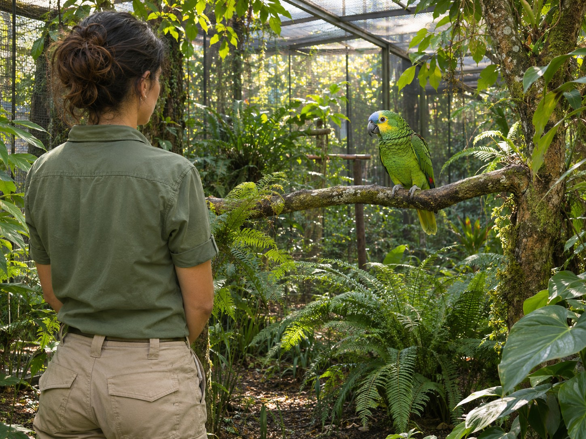

Marina Costa
Coordenação operacional e acompanhamento documental.
Destinação responsável. Cuidado e transparência.
Somos uma empresa terceirizada pelo IBAMA para prestar apoio operacional e documental à destinação de animais apreendidos e aos leilões legalmente cabíveis.

A proposta toma como referência a Instrução Normativa IBAMA nº 19/2014, especialmente os arts. 25 e 30 a 35.
Para a fauna silvestre nativa, a soltura é prioritária. Quando inviável ou desaconselhada, o encaminhamento institucional deve garantir guarda e cuidados sob responsabilidade de técnicos habilitados, conforme decisão do órgão competente.
Os silvestres exóticos também possuem regras próprias de encaminhamento a instituições autorizadas para o manejo da espécie.
Leilões são apresentados apenas nas hipóteses legalmente cabíveis para animais domésticos e exóticos, conforme o processo administrativo e o edital aplicável. Não são uma modalidade de venda livre de fauna silvestre.
Os destinatários e participantes são exclusivamente instituições regularizadas, com técnicos habilitados e infraestrutura adequada. Essa restrição de público não autoriza, por si só, qualquer modalidade de destinação.
Coordenação operacional e acompanhamento documental.
Tecnologia e organização das informações.
Acompanhamento técnico e bem-estar animal.